Menjelajahi keindahan alam, ke eksotis-an, dan sabana khas di Jalur Cemoro Sewu.
Mulai JelajahKetinggian Atas Permukaan Laut
Jalur Pendakian Eksotis
Estimasi Perjalanan
Kisah singkat penjelajahan menuju puncak Hargo Dumilah
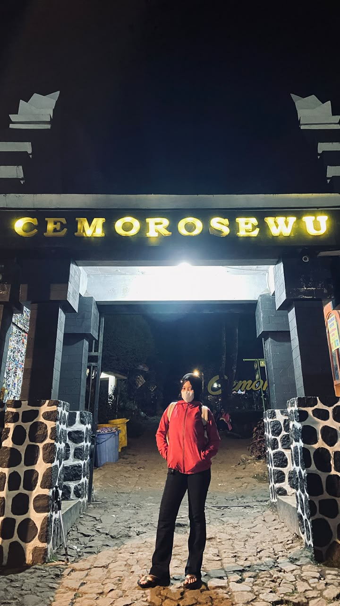
Perjalanan dimulai dari gerbang Cemoro Sewu yang tidak terlihat terlalu mewah, namun tidak semua orang bisa menyelesaikan perjalanan ini tanpa fisik yang matang. Udara dingin dan keramaian manusia dini hari menyambut langkah awal dengan semangat.
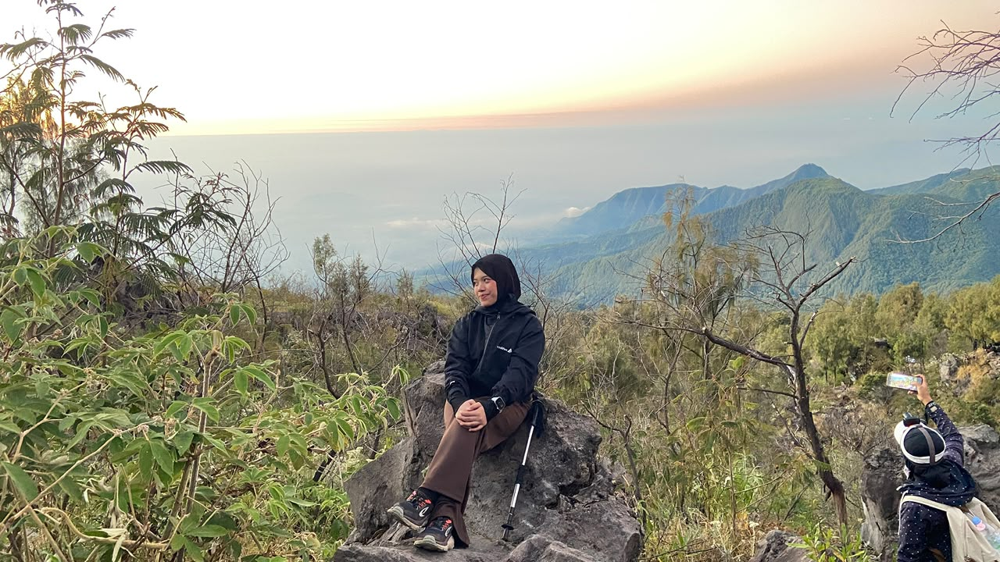
Melewati trek bebatuan menanjak tanpa tanah yang sangat menguras tenaga. Rasa lelah terbayar saat ada cahaya berwarna kuning keemasan dari Timur.
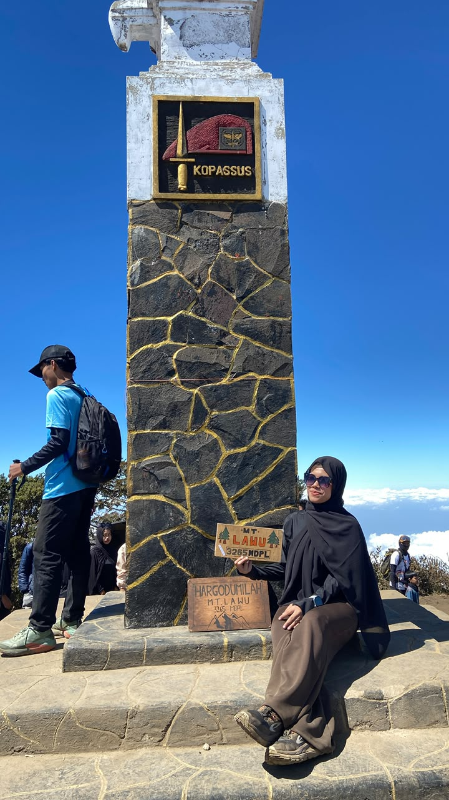
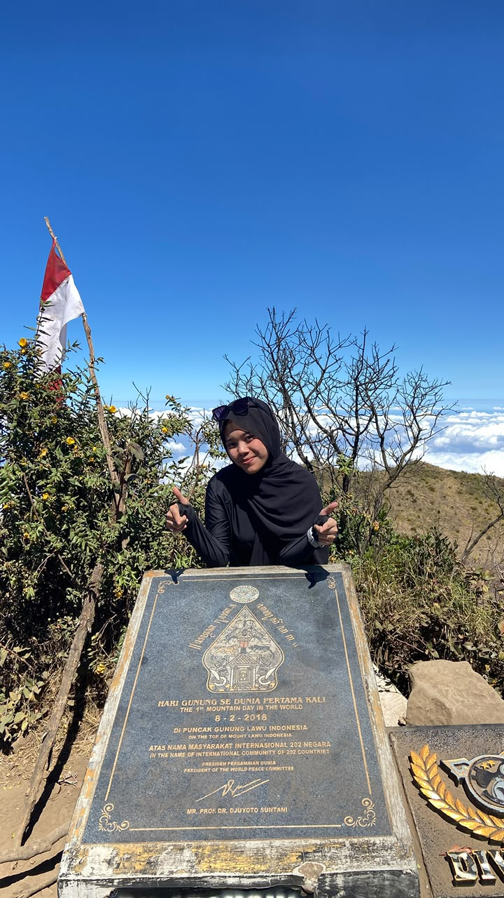
Mencapai puncak saat mentari sudah terik. Lalu tidak lupa membuat momen dengan Tugu Puncak Hargo Dumilah, karena perjalanan menuju puncak sungguh tidaklah mudah. Estimasi perjalanan menuju puncak lumayan lama karena kami tidak ada persiapan yang cukup matang. Waktu 16 jam merupakan waktu yang sangat panjang bagi orang yang sudah persiapan dengan baik. Mulai pukul 2.45 hingga pukul 7 malam kita berada di jalur ini.
Dokumentasi keindahan alam Gunung Lawu
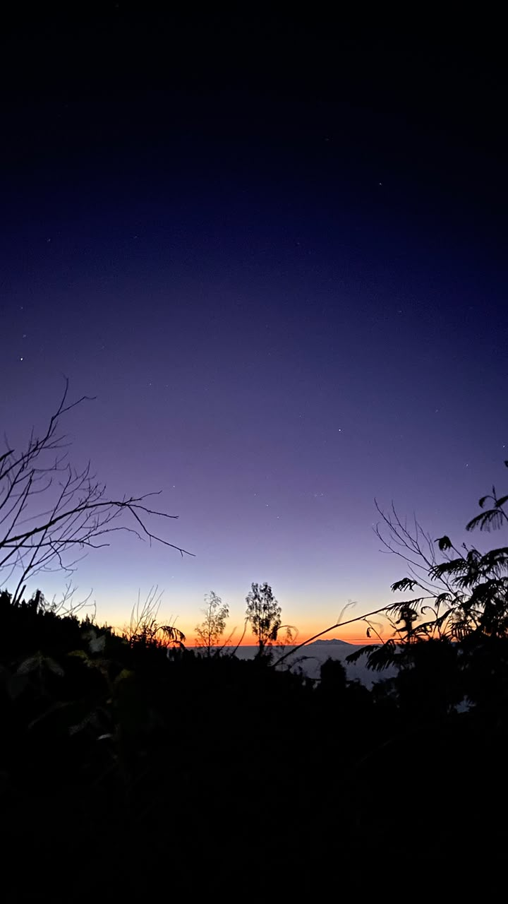
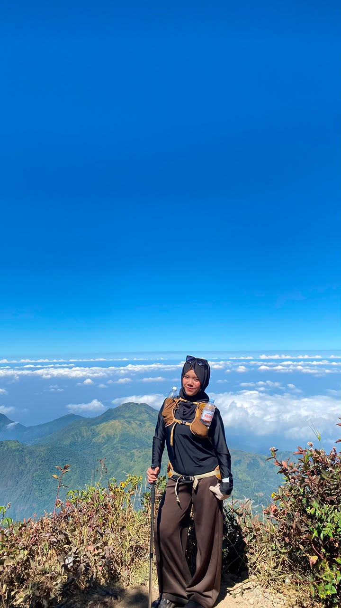
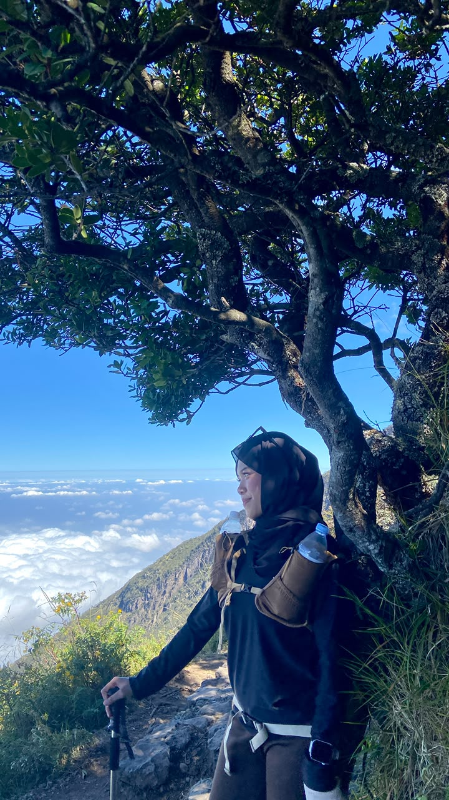
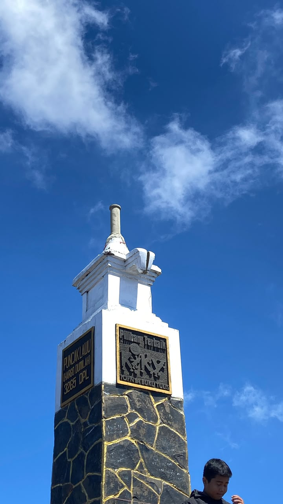
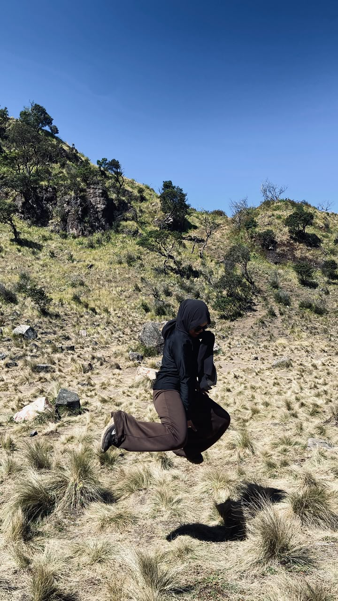
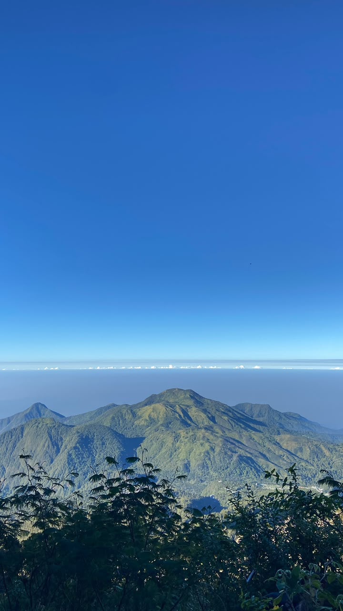
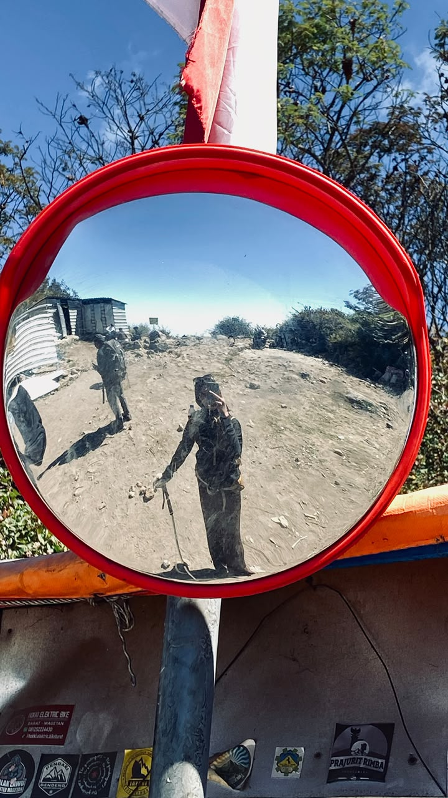
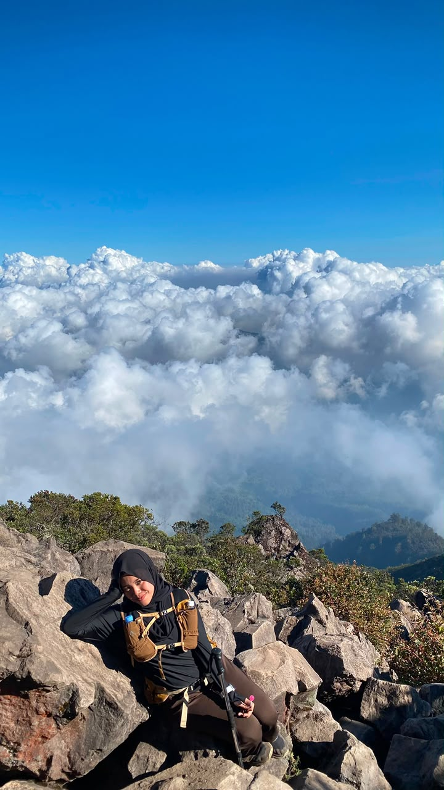
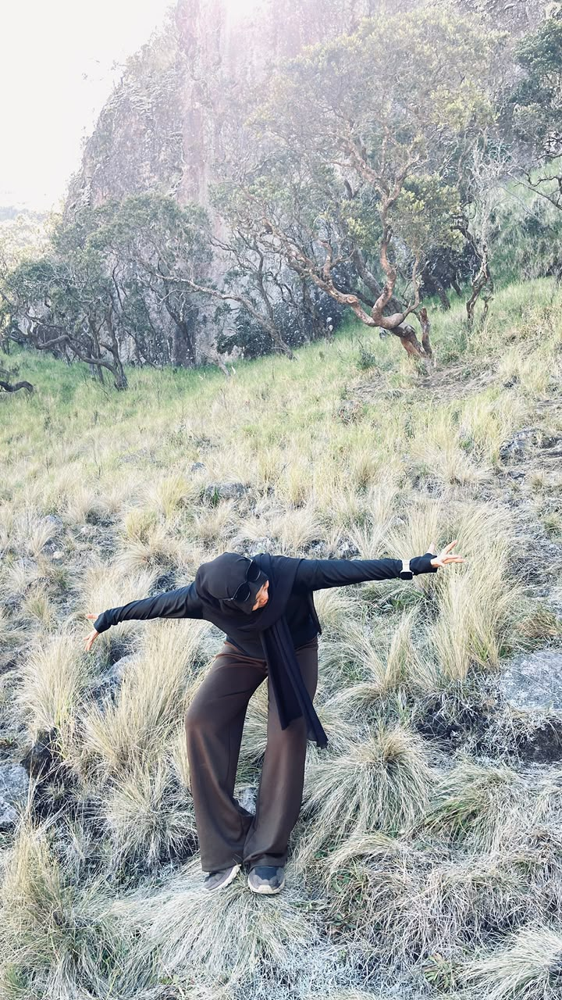